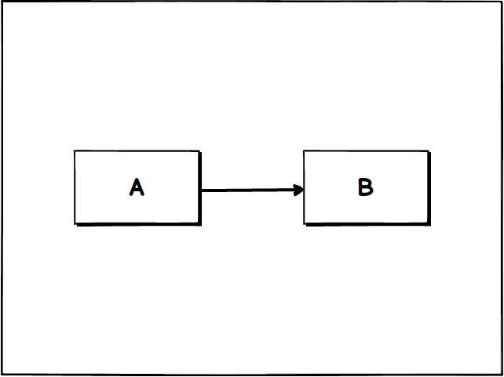

Node.js Microservices
Rad ideas and concepts
Ideas from...
What is Antifragile?
Fragile
Porcelain teacup
House of cards
Monolithic code bases
Resilient
Big oak trees
A hammer
Cloud architecture
Antifragile
The human body
Cities and economies
Ideas and movements
https://www.nasa.gov/mission_pages/shuttle/flyout/flyfeature_shuttlecomputers.html
https://en.wikipedia.org/wiki/MacCready_Gossamer_Albatross
What is microservice?
Small independent processes
Communicating via messages
A powerful component model
Why microservices?
Avoid technial debt
Continous Delivery
Build fast
What are the trade offs?
Deployment is more complex
Weird programming model
Services have to find each other
Call me

Coupling
Super Coupling!
Un-Coupling?
Decoupled!
Service Discovery by...
Configuration files
Intelligent load-balancing
Service registries
DNS
Message bus
What if service discovery didn't require identity?
Pattern Matching
Use message data to define patterns, and these patterns define a language.
Transport Independence
Services should not know about eachother, or how to send messages.
Services are fully defined by:
- message patterns they recognise, and
- message patterns they emit.
The SWIM algorithm
"Scalable Weakly-consistent Infection-style Process Group Membership Protocol"
http://www.cs.cornell.edu/~asdas/research/dsn02-SWIM.pdf
Designed for large scale (Uber)
Basic idea:
- each service pings a random subset of services (different each time)
- the pings establish health and disseminate membership information
Scale
Deploy
Composabilty